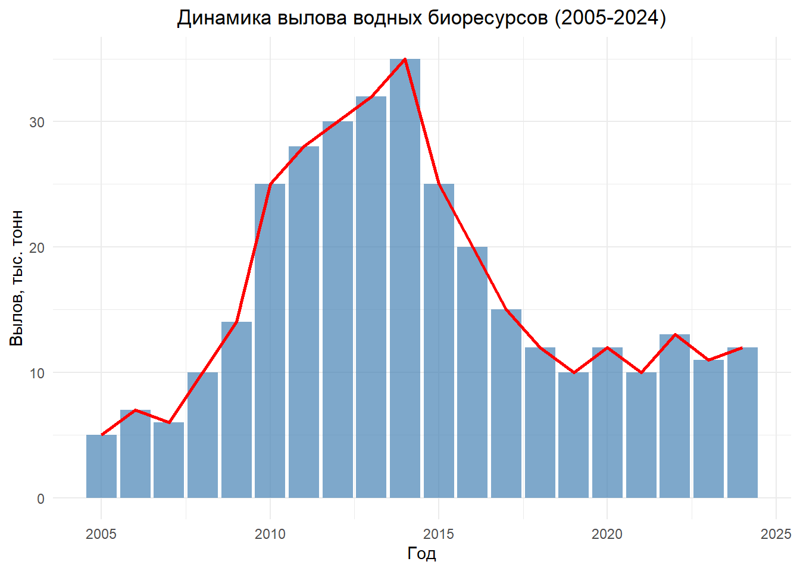
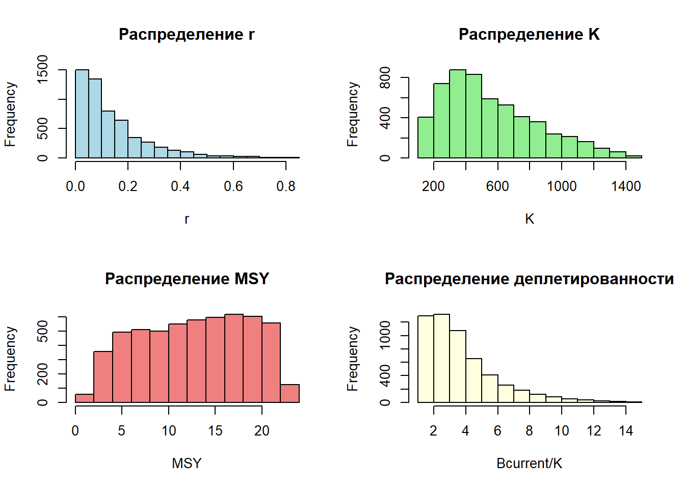
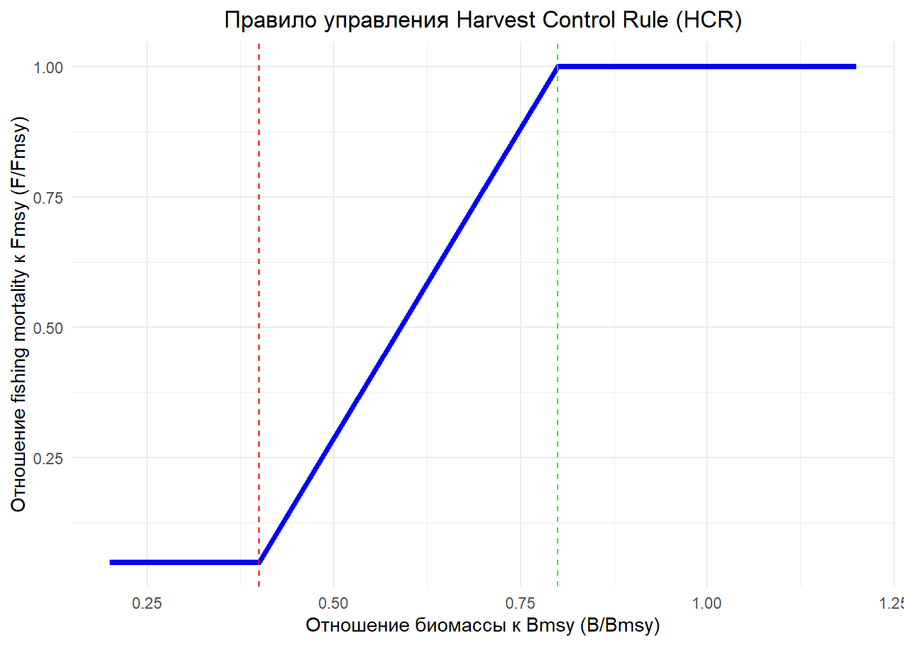
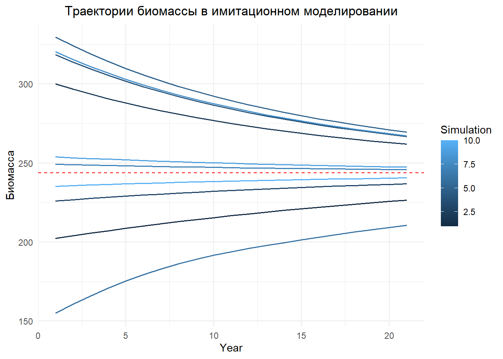
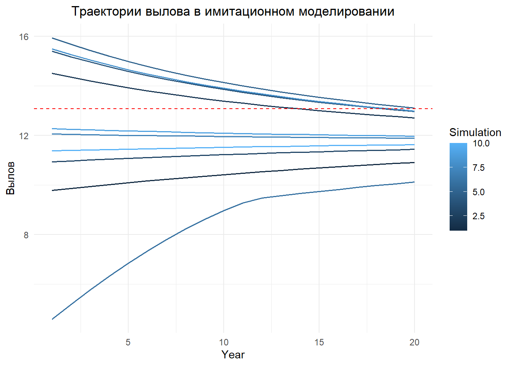

# =============================================================================
# ПРАКТИЧЕСКИЙ АНАЛИЗ ВОДНЫХ БИОРЕСУРСОВ МЕТОДОМ CATCH-MSY
# =============================================================================
# ------------------------- 1. УСТАНОВКА И ЗАГРУЗКА ПАКЕТОВ ---------------------------
# Устанавливаем необходимые пакеты (если еще не установлены)
if (!require("ggplot2")) install.packages("ggplot2")Загрузка требуемого пакета: ggplot2if (!require("dplyr")) install.packages("dplyr")Загрузка требуемого пакета: dplyr
Присоединяю пакет: 'dplyr'Следующие объекты скрыты от 'package:stats':
filter, lagСледующие объекты скрыты от 'package:base':
intersect, setdiff, setequal, unionif (!require("tidyr")) install.packages("tidyr")Загрузка требуемого пакета: tidyr# Загружаем пакеты
library(ggplot2)
library(dplyr)
library(tidyr)
# ------------------------- 2. ЗАГРУЗКА ДАННЫХ ---------------------------
# Вектор лет наблюдений
Year <- 2005:2024
# Данные по вылову (тыс. тонн)
Catch <- c(5, 7, 6, 10, 14, 25, 28, 30, 32, 35, 25, 20, 15, 12, 10, 12, 10, 13, 11, 12)
# Создаем график динамики вылова
catch_df <- data.frame(Year = Year, Catch = Catch)
ggplot(catch_df, aes(x = Year, y = Catch)) +
geom_bar(stat = "identity", fill = "steelblue", alpha = 0.7) +
geom_line(color = "red", linewidth = 1) +
labs(title = "Динамика вылова водных биоресурсов (2005-2024)",
y = "Вылов, тыс. тонн", x = "Год") +
theme_minimal() +
theme(plot.title = element_text(hjust = 0.5))
# ------------------------- 3. РЕАЛИЗАЦИЯ МЕТОДА CATCH-MSY ---------------------------
# Функция для реализации метода Catch-MSY
catch_msy_analysis <- function(catch, n_iter = 100000, r_prior = c(0.01, 1.5)) {
n_years <- length(catch)
# Приоры для параметров
r <- runif(n_iter, r_prior[1], r_prior[2])
k <- runif(n_iter, max(catch) * 3, max(catch) * 50)
msy <- r * k / 4 # MSY = r*K/4 для модели Шефера
# Массивы для хранения результатов
viable <- rep(FALSE, n_iter)
b_msy <- k / 2 # Bmsy = K/2 для модели Шефера
# Проверяем каждую комбинацию параметров
for (i in 1:n_iter) {
biomass <- numeric(n_years + 1)
biomass[1] <- k[i] # Начальная биомасса = K
# Моделируем динамику биомассы
for (t in 1:n_years) {
surplus_production <- r[i] * biomass[t] * (1 - biomass[t] / k[i])
biomass[t + 1] <- max(0.001 * k[i], biomass[t] + surplus_production - catch[t])
}
# Проверяем условия жизнеспособности
if (all(biomass > 0.001 * k[i]) && all(biomass < 1.1 * k[i]) &&
biomass[n_years + 1] > 0.2 * k[i] && biomass[n_years + 1] < 0.8 * k[i]) {
viable[i] <- TRUE
}
}
# Возвращаем жизнеспособные комбинации параметров
list(
r = r[viable],
k = k[viable],
msy = msy[viable],
b_msy = b_msy[viable],
depletion = biomass[n_years + 1] / k[viable]
)
}
# Применяем метод Catch-MSY
set.seed(123) # Для воспроизводимости результатов
msy_results <- catch_msy_analysis(Catch)
# ------------------------- 4. АНАЛИЗ РЕЗУЛЬТАТОВ CATCH-MSY ---------------------------
# Основные статистики
msy_summary <- data.frame(
Parameter = c("r", "K", "MSY", "Bmsy"),
Median = c(
median(msy_results$r),
median(msy_results$k),
median(msy_results$msy),
median(msy_results$b_msy)
),
Mean = c(
mean(msy_results$r),
mean(msy_results$k),
mean(msy_results$msy),
mean(msy_results$b_msy)
),
SD = c(
sd(msy_results$r),
sd(msy_results$k),
sd(msy_results$msy),
sd(msy_results$b_msy)
)
)
print("Результаты анализа Catch-MSY:")[1] "Результаты анализа Catch-MSY:"print(msy_summary) Parameter Median Mean SD
1 r 0.09671814 0.1409528 0.1330245
2 K 487.67637851 555.3402905 292.9906278
3 MSY 13.08343781 12.7539980 5.7560545
4 Bmsy 243.83818925 277.6701453 146.4953139# Визуализация распределения параметров
par(mfrow = c(2, 2))
hist(msy_results$r, main = "Распределение r", xlab = "r", col = "lightblue")
hist(msy_results$k, main = "Распределение K", xlab = "K", col = "lightgreen")
hist(msy_results$msy, main = "Распределение MSY", xlab = "MSY", col = "lightcoral")
hist(msy_results$depletion, main = "Распределение деплетированности",
xlab = "Bcurrent/K", col = "lightyellow")
# Текущий статус запаса
current_status <- data.frame(
Metric = c("Текущий вылов", "MSY", "Отношение вылова к MSY", "Деплетированность (B/K)"),
Value = c(
mean(Catch[length(Catch)-2:0]), # Средний вылов за последние 3 года
median(msy_results$msy),
mean(Catch[length(Catch)-2:0]) / median(msy_results$msy),
median(msy_results$depletion)
)
)
print("Текущий статус запаса:")[1] "Текущий статус запаса:"print(current_status) Metric Value
1 Текущий вылов 12.0000000
2 MSY 13.0834378
3 Отношение вылова к MSY 0.9171901
4 Деплетированность (B/K) 3.1261895# ------------------------- 5. ОПРЕДЕЛЕНИЕ REFERENCE POINTS ---------------------------
# Reference points на основе Catch-MSY
reference_points <- data.frame(
Point = c("MSY", "Bmsy", "Fmsy"),
Value = c(
median(msy_results$msy),
median(msy_results$b_msy),
median(msy_results$r) / 2 # Fmsy = r/2 для модели Шефера
)
)
print("Reference Points:")[1] "Reference Points:"print(reference_points) Point Value
1 MSY 13.08343781
2 Bmsy 243.83818925
3 Fmsy 0.04835907# ------------------------- 6. ПОСТРОЕНИЕ ПРАВИЛА УПРАВЛЕНИЯ (HCR) ---------------------------
# Функция для определения HCR на основе B/Bmsy
harvest_control_rule <- function(b_ratio,
blim = 0.4,
btarget = 0.8,
fmin = 0.05,
fmax = 1.0) {
if (b_ratio <= blim) {
return(fmin) # Минимальный уровень изъятия при низкой биомассе
} else if (b_ratio >= btarget) {
return(fmax) # Максимальный уровень изъятия при высокой биомассе
} else {
# Линейное увеличение от fmin до fmax
return(fmin + (fmax - fmin) * (b_ratio - blim) / (btarget - blim))
}
}
# Пример применения HCR для различных уровней биомассы
b_ratios <- seq(0.2, 1.2, by = 0.1)
hcr_values <- sapply(b_ratios, harvest_control_rule)
hcr_df <- data.frame(B_Bmsy = b_ratios, F_Fmsy = hcr_values)
ggplot(hcr_df, aes(x = B_Bmsy, y = F_Fmsy)) +
geom_line(linewidth = 1.5, color = "blue") +
geom_vline(xintercept = 0.4, linetype = "dashed", color = "red") +
geom_vline(xintercept = 0.8, linetype = "dashed", color = "green") +
labs(title = "Правило управления Harvest Control Rule (HCR)",
x = "Отношение биомассы к Bmsy (B/Bmsy)",
y = "Отношение fishing mortality к Fmsy (F/Fmsy)") +
theme_minimal() +
theme(plot.title = element_text(hjust = 0.5))
# ------------------------- 7. МОДЕЛИРОВАНИЕ УПРАВЛЕНИЯ (MSE) ---------------------------
# Упрощенное моделирование управления
management_simulation <- function(init_biomass, r, k, catch, n_years = 20, hcr_function) {
biomass <- numeric(n_years + 1)
biomass[1] <- init_biomass
catch_rec <- numeric(n_years)
f_rec <- numeric(n_years)
b_ratio_rec <- numeric(n_years)
for (t in 1:n_years) {
# Расчет текущего отношения B/Bmsy
b_ratio <- biomass[t] / (k / 2)
b_ratio_rec[t] <- b_ratio
# Применение HCR для определения уровня изъятия
f_multiplier <- hcr_function(b_ratio)
f_rec[t] <- f_multiplier * (r / 2) # F = multiplier * Fmsy
# Расчет вылова на основе F
catch_rec[t] <- f_rec[t] * biomass[t]
# Обновление биомассы (модель Шефера)
biomass[t + 1] <- max(0.001 * k, biomass[t] + r * biomass[t] * (1 - biomass[t] / k) - catch_rec[t])
}
list(biomass = biomass, catch = catch_rec, f = f_rec, b_ratio = b_ratio_rec)
}
# Запуск моделирования с различными начальными условиями
set.seed(123)
n_sim <- 10
init_depletion <- runif(n_sim, 0.3, 0.7) # Различные начальные уровни деплетированности
sim_results <- list()
for (i in 1:n_sim) {
init_biomass <- init_depletion[i] * median(msy_results$k)
sim_results[[i]] <- management_simulation(init_biomass,
median(msy_results$r),
median(msy_results$k),
Catch,
hcr_function = harvest_control_rule)
}
# ------------------------- 8. АНАЛИЗ РЕЗУЛЬТАТОВ MSE ---------------------------
# Подготовка данных для визуализации
years_proj <- 1:21
sim_biomass <- sapply(sim_results, function(x) x$biomass)
sim_catch <- sapply(sim_results, function(x) x$catch)
# Визуализация траекторий биомассы
biomass_df <- data.frame(Year = rep(years_proj, n_sim),
Biomass = as.vector(sim_biomass),
Simulation = rep(1:n_sim, each = length(years_proj)))
ggplot(biomass_df, aes(x = Year, y = Biomass, group = Simulation, color = Simulation)) +
geom_line(linewidth = 0.7) +
geom_hline(yintercept = median(msy_results$b_msy), linetype = "dashed", color = "red") +
labs(title = "Траектории биомассы в имитационном моделировании",
y = "Биомасса") +
theme_minimal() +
theme(plot.title = element_text(hjust = 0.5))
# Визуализация траекторий вылова
catch_df_proj <- data.frame(Year = rep(1:20, n_sim),
Catch = as.vector(sim_catch),
Simulation = rep(1:n_sim, each = 20))
ggplot(catch_df_proj, aes(x = Year, y = Catch, group = Simulation, color = Simulation)) +
geom_line(linewidth = 0.7) +
geom_hline(yintercept = median(msy_results$msy), linetype = "dashed", color = "red") +
labs(title = "Траектории вылова в имитационном моделировании",
y = "Вылов") +
theme_minimal() +
theme(plot.title = element_text(hjust = 0.5))
# Анализ производительности
performance_metrics <- data.frame(
Simulation = 1:n_sim,
AvgCatch = apply(sim_catch, 2, mean),
AvgBiomass = apply(sim_biomass[-1,], 2, mean),
MinBiomass = apply(sim_biomass, 2, min),
FinalBiomass = sim_biomass[21,]
)
print("Метрики производительности управления:")[1] "Метрики производительности управления:"print(performance_metrics) Simulation AvgCatch AvgBiomass MinBiomass FinalBiomass
1 1 10.414521 216.5646 202.4008 226.5302
2 2 13.443319 276.0821 261.9283 261.9283
3 3 11.220346 232.5633 226.0823 236.9172
4 4 13.940186 285.6792 266.8545 266.8545
5 5 14.231859 291.2896 269.6423 269.6423
6 6 8.363161 191.6799 155.1896 210.7870
7 7 11.962992 247.2046 245.8428 245.8428
8 8 13.988406 286.6079 267.3206 267.3206
9 9 12.103308 249.9596 247.4627 247.4627
10 10 11.522725 238.5368 235.3750 240.6241# ------------------------- 9. ФОРМУЛИРОВАНИЕ РЕКОМЕНДАЦИЙ ---------------------------
# Формулируем рекомендации на основе анализа
median_msy <- median(msy_results$msy)
current_catch <- mean(Catch[(length(Catch)-2):length(Catch)])
cat("АНАЛИЗ РЕЗУЛЬТАТОВ И РЕКОМЕНДАЦИИ:\n")АНАЛИЗ РЕЗУЛЬТАТОВ И РЕКОМЕНДАЦИИ:cat("=============================================\n\n")=============================================cat("1. Оценка MSY методом Catch-MSY: ", round(median_msy, 2), "тыс. тонн\n")1. Оценка MSY методом Catch-MSY: 13.08 тыс. тоннcat("2. Текущий уровень вылова: ", round(current_catch, 2), "тыс. тонн\n")2. Текущий уровень вылова: 12 тыс. тоннcat("3. Отношение вылова к MSY: ", round(current_catch / median_msy, 2), "\n")3. Отношение вылова к MSY: 0.92 cat("4. Текущая деплетированность запаса (B/K): ", round(median(msy_results$depletion), 2), "\n\n")4. Текущая деплетированность запаса (B/K): 3.13 if (current_catch / median_msy > 1) {
cat("ВЫВОД: Текущий уровень вылова превышает оценку MSY. Рекомендуется сокращение вылова.\n")
} else if (current_catch / median_msy > 0.8) {
cat("ВЫВОД: Текущий уровень вылова близок к MSY. Рекомендуется осторожный подход.\n")
} else {
cat("ВЫВОД: Текущий уровень вылова ниже MSY. Возможно увеличение вылова.\n")
}ВЫВОД: Текущий уровень вылова близок к MSY. Рекомендуется осторожный подход.cat("\nРЕКОМЕНДАЦИИ ПО УПРАВЛЕНИЮ ЗАПАСОМ:\n")
РЕКОМЕНДАЦИИ ПО УПРАВЛЕНИЮ ЗАПАСОМ:cat("- Установить целевой уровень вылова в диапазоне ", round(median_msy * 0.8, 2), "-",
round(median_msy, 2), "тыс. тонн\n")- Установить целевой уровень вылова в диапазоне 10.47 - 13.08 тыс. тоннcat("- Внедрить правило управления (HCR) для адаптивного регулирования вылова\n")- Внедрить правило управления (HCR) для адаптивного регулирования выловаcat("- Усилить мониторинг запаса для улучшения оценок\n")- Усилить мониторинг запаса для улучшения оценокcat("- Проводить регулярную оценку запаса с обновлением рекомендаций\n")- Проводить регулярную оценку запаса с обновлением рекомендаций# =============================================================================
# КОНЕЦ СКРИПТА
# =============================================================================